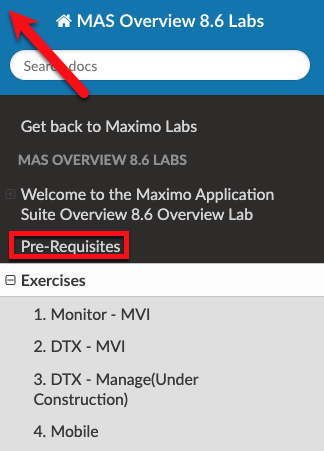
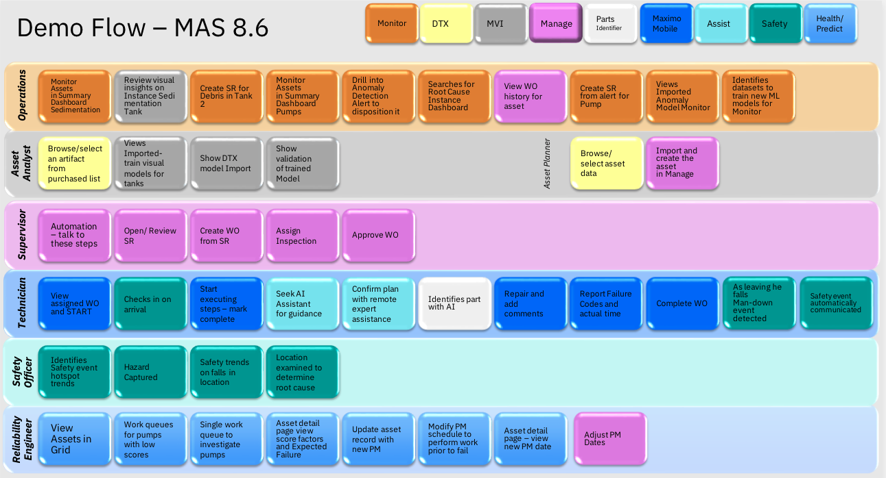

Welcome to the Maximo Application- End-to-End Overview Lab (Version: 8.6)
You will learn a high level overview of the Maximo Application Suite applications: Monitor, Digital Twin Exchange, Visual Inspection, Manage, Mobile, Assist, Parts Identifier, Safety, Predict, and Health with a story of a waterwaste plant. You will understand how all of these applications work together to run operations within a business.
Students doing the demo in this lab should have been provided access to Maximo Application Suite v8.6 instance by the Lab Facilitator or your IBM Rep.
Preparing for delivering the demo should read the Pre-Requisites located in the left column where the indexes for the entire lab are.

See Contributing to Labs if you are interested in providing feedback by submitting enhancements or bugs. We also welcome your contributions to existing or new exercises.
Story
A Water Resource Authority needs to manage water and wastewater treatment assets across multiple cities and regions from a single application. Remote operational support engineers need a single dashboard to manage sites and assets. The Technician needs to ensure his safety and have access to accurate details about the work he is assigned to perform. The Asset Analyst and Asset Manager tap into digital twins to improve asset management operations. Safety Officers are ensuring appropriate safety polices in place to minimize risk and provide safer working environments for the technicians. The reliability engineer needs to understand the asset health and prevent predicted failures by properly servicing the rotating assets like centrifugal pumps.
Personas
• Remote Operational Support
• Asset Analyst
• Asset Manager
• Maintenance Supervisor
• Technician
• Safety Officer
• Reliability Engineer
Overview
Scene: Remote Operational Support Engineer monitors assets in Monitor
• Operational support navigates to Sedimentation summary dashboard
• Operational support filters on alert that Sedimentation Tank is dirty
• Operational support navigates to Tank instance dashboard opens first SR to have the debris removed
• Operational support navigates to Pump summary dashboard
• Operational support sees high anomalies on vibration on a Pump 005 of 100s of pumps at scale.
• Operational support reviews asset history and service recently done to replace the seals to address vibration.
• Operational support reviews Anomaly function and alert thresholds.
• Operational support opens Service request to look at vibration x - Pump 005.
Scene: Asset Analyst trains models with Maximo Visual Inspection and searches for model in DTX
• In MVI – Create sedimentation tank model
• In DTX - Browse the catalog and purchase and purchase the sedimentation tank model
• In Monitor - Shows the anomaly model configured in Asset Monitor
• In MVI & DTX – Browse the Browse the DTX catalog to discover models for sedimentation tanks.
• In MVI, show UX to validate the imported model. To show MVI Edge, please refer to this link.
(Under Construction)Scene: Asset Manager sets up assets using resources from Digital Twin Exchange & Manage
• In DTX - Browse the catalog and purchase a job plan for centrifugal pump
• In Manage - shows how a purchased job plan and spare parts can be imported for Pump MFG.
Scene: Technician performs inspection and repair using Asset Manager, Safety and Assist
• Manage Mobile App - Technician executes the WO in Mobile and after finding after finding bad o-ring, fixes it, adds failure code, comments, and completes the WO
• Assist Mobile App - Seek AI Assistant for Guidance
• Assist Mobile App(Collaborate) - Confirm plan with remote expert tech assistance
• Parts Identifier - Find the exact part needed using AI
• Worker Safety - Automated notification of safety incident with hazard area identified
(Under Construction)Scene: Safety Officer ensure safety during asset operations and maintenance using Safety
• In Safety – Examine hotspots on Safety dashboard for high risk locations for monitored safety issues
Scene: Reliability Engineer views asset performance in Health and Predict to plan asset maintenance and investment
• Health - Reliability engineer views the assets in the grid view, briefly discuss page features, shows pumps only with private saved view
• Health - Reliability engineer views work queue "Failing before PM"
• Health/Predict - Reliability engineer selects a PMPDEVICE XXX that is also under performing and is predicted to fail before the next scheduled PM
• Health/Predict - Reliability engineerreviews asset detail page and asset timeline.
• Health/Predict - Reliability engineer reviews options to take at the top of the screen.
Demo Flow

Updated: 2022-02-26